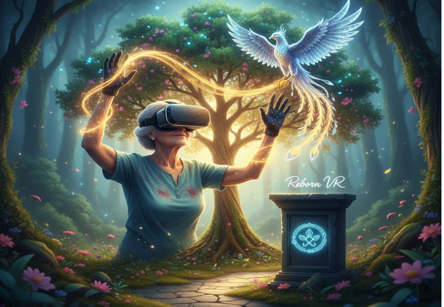

REBORN VR
Team Brigada Reborn
María Castro
Product Owner
Yosue Piña
Scrum Master
Luis Segovia
Desarrollador
Bitácora de Decisiones Colaborativas
Principales Acuerdos del Equipo
Decisión de Arquitectura (Sprint Planning)
Luis (Equipo Técnico) presentó dos opciones para la HU-005: procesar los ángulos en el visor (Unity) o en el servidor.
Decisión: El equipo acordó procesar los datos crudos en el visor (Unity) y enviar solo el ángulo calculado (ej. "85 grados") a la API.
Justificación: María (PO) argumentó que la necesidad inmediata es la respuesta en tiempo real para el terapeuta (HU-004). Un retraso (latencia) en el cálculo del servidor haría inútil el panel. Se crea una tarjeta en Trello para mover esta lógica al servidor en un sprint futuro.
Manejo de Impedimento (Sprint Retrospective)
Problema: Durante el Sprint, Luis (Equipo Técnico) reportó que el cálculo del ángulo (HU-005) tenía una fluctuación (ruido) de +/- 5 grados.
Decisión: Yosue (SM) facilitó una reunión de emergencia. Se descubrió que el problema era la falta de una "fase de calibración". Se acordó añadir una nueva Historia de Usuario obligatoria para el próximo Sprint: "Como paciente, quiero una pantalla de calibración inicial de 10 segundos".
Intervención: Yosue (SM) vio la tarjeta bloqueada en Trello y facilitó la reunión entre Luis y un Fisioterapeuta (Socio Clave). Creó la tarjeta en Trello inmediatamente.
Acuerdo de Prioridad (Sprint Planning)
María (PO) quería añadir una historia para "gamificar" el movimiento. Luis (Equipo Técnico) advirtió que esto era demasiado trabajo junto con la creación de la API (HU-006) y el pipeline de CI/CD (HU-008).
Decisión: Yosue (SM) facilitó la negociación. El equipo acordó que el "Seguimiento Preciso" y la "Automatización" (HUs 004-008) eran la base técnica y la prioridad. La "Gamificación" se movió al Sprint 3.
Herramientas Aplicadas
- Google Meet: Utilizado para todas las ceremonias ágiles (Planning, Review, Retrospective).
- Trello: Usado para documentar decisiones, dividir historias en tareas y gestionar el backlog (ej. mover "gamificación" al próximo sprint).
- GitHub Actions: Empleado para implementar el pipeline de CI/CD acordado en la HU-008 para la automatización.
Presentación Simbólica
Narrativa del Proyecto (El Propósito)
"Buenos días. Somos la Brigada REBORN:
Honorables compañeros... venimos a hablarles de esperanza... Todos conocemos la cruda realidad de la rehabilitación física: un camino largo, solitario y desmoralizante... El resultado es la deserción. Pacientes que abandonan sus terapias no por falta de voluntad, sino porque el proceso les roba la motivación.
Nuestro proyecto, Reborn VR, nace de una pregunta: ¿Y si la terapia no fuera una obligación que se soporta, sino una experiencia que se espera?
Con Reborn VR, el paciente no está en una clínica fría; está en un bosque místico, usando su movimiento para hacer crecer un árbol de luz. No está haciendo una repetición dolorosa; está ayudando a un fénix digital a alzar el vuelo, un fénix que simboliza su propio renacimiento.
A través de la Realidad Virtual... reconecta con su propósito y su voluntad de sanar... No estamos construyendo solo un software, estamos usando la tecnología más avanzada para construir un puente de regreso a la vida. Eso es Reborn VR."
Justificación Metodológica
- Metodologías Ágiles (Scrum): No definimos un plan de 5 años. Definimos un MVP ("terapia gamificada con seguimiento preciso"). Trabajamos en Sprints de 2 semanas con roles claros (PO, SM, Técnico) para entregar valor y adaptarnos semanalmente.
- Herramientas de Colaboración: Nuestra clave es la fusión de talento. El equipo técnico (Luis) trabaja directamente con los Fisioterapeutas (Socios Clave). Usamos Trello para visibilidad total y un pipeline de CI/CD para asegurar la integración del software con los Visores de RV.
- Gestión de Equipos (Agilidad en Acción): Cuando se detectó "ruido" en los datos (un bloqueo crítico), el Scrum Master (Yosue) no abrió un ticket: convocó una sesión de emergencia en Google Meet. En 30 minutos, el experto clínico diagnosticó el problema: falta de "calibración". Se creó una nueva historia, se priorizó y se resolvió el bloqueo. Así gestionamos equipos: integrando su experiencia en tiempo real.
Nuestro Ciclo de Desarrollo Ágil (Scrum)
1. Product Backlog
Lista priorizada de funcionalidades y requisitos del proyecto (Historias de Usuario).
2. Sprint Planning
El equipo selecciona elementos del Product Backlog para el próximo Sprint y define cómo construirlos.
3. Sprint (2 Semanas)
Desarrollo iterativo donde el equipo convierte los requisitos en un incremento de producto funcional.
• Daily Scrums
4. Incremento Funcional
Versión utilizable del producto al final de cada Sprint. Listo para ser entregado.
5. Sprint Review
El equipo demuestra el Incremento a los stakeholders para obtener feedback.
6. Sprint Retrospective
El equipo reflexiona sobre el Sprint para identificar mejoras en procesos y herramientas.
Elemento Simbólico
"La Insignia del Renacimiento Digital"
Significado: "Esta insignia representa la convergencia perfecta entre la tecnología de vanguardia (RV e IA) y el propósito humanitario (la recuperación)".
Visión: "Proyectamos que Reborn VR se convierta en el estándar de oro de la rehabilitación a nivel mundial. Al invertir en Reborn VR, invierte en el futuro de la salud y la movilidad humana."
Reborn VR: La Tecnología al Servicio de la Recuperación y Terapia sin Límites.
"Cuando la terapia deja de ser una obligación y se convierte en propósito, el espíritu encuentra la fuerza para renacer."